不期而遇~
OCR 识别提示（待核对）
- OCR 自动识别文字，尚未逐字校对；可能错字、漏字、漏行，数字、姓名、标点及断行也可能有误，请以截图为准。
- 这里只保留 PDF 已截到的正文、留言和作者回复；截图以外的留言不在此存档中。
- 未从截图推断留言总数或回复关系；手机界面文字也可能混入 OCR。
- 低置信标记仅为机器提示，并不表示未标记的文字已经准确。
识别工具：tesseract 5.5.0 · tesseract-ocr/tessdata_best chi_sim。识别器置信度仅用于提示核对，不是文字准确率。
第 1 页 · 原始截图
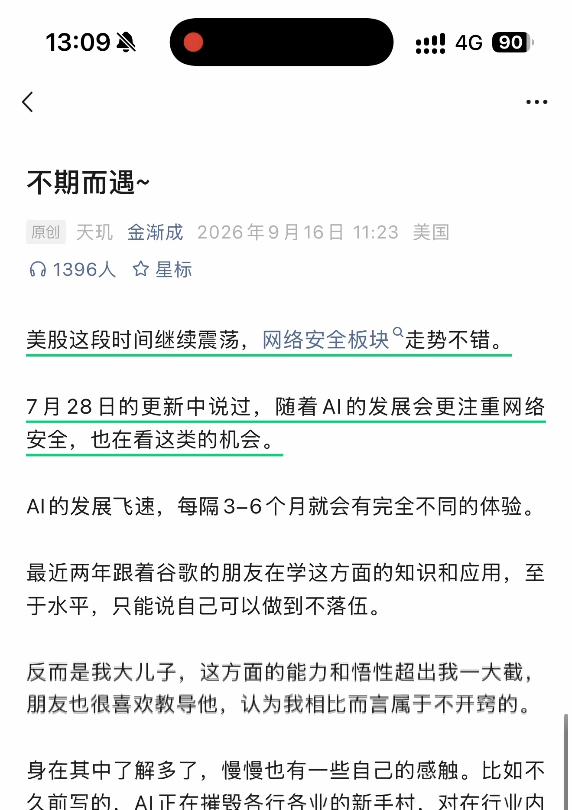
查看本页自动识别文字（OCR待核对） · 15 处低置信度提示
以下为未经逐字核对的自动识别结果，请以上方原图为准。
识别器标记 15 处低置信度，请对照截图核对
这些是识别器的风险提示，并不等于已确认的错误。
- oo 人》 :oo
- 不期而遇 ~
- 原创天现金渐成 2026 年 9 月 16 日 11:23 美国
- 们 1396 人空星标
- Al 的发展飞速， 每隔 3-6 个月就会有完全不同的体验。
- 朋友也很喜欢教导他， 认为我相比而言属于不开窍的。
- 久前写的，Al 正在摧毁各行各业的新手村， 对在行业内
第 2 页 · 原始截图
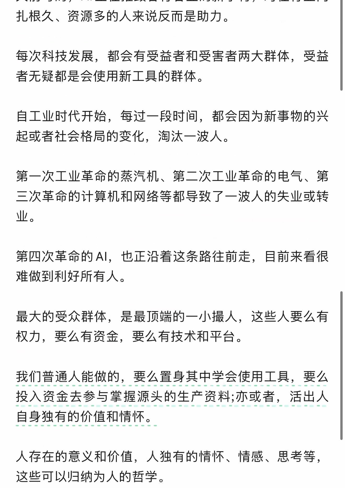
查看本页自动识别文字（OCR待核对） · 6 处低置信度提示
以下为未经逐字核对的自动识别结果，请以上方原图为准。
识别器标记 6 处低置信度，请对照截图核对
这些是识别器的风险提示，并不等于已确认的错误。
- 起或者社会格局的变化， 淘汰一波人。
- 最大的受众群体， 是最顶端的一小撮人， 这些人要么有
- 我们普通人能做的， 要么置身其中学会使用工具， 要人么
- 人存在的意义和价值， 人独有的情怀、 情感、 思考等，
第 3 页 · 原始截图
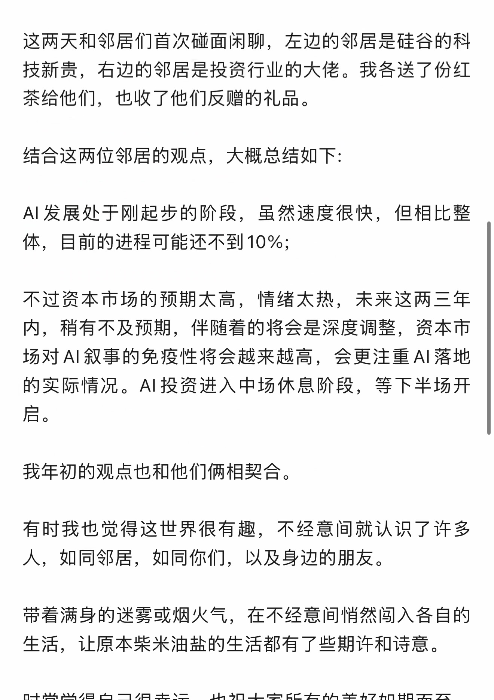
查看本页自动识别文字（OCR待核对） · 15 处低置信度提示
以下为未经逐字核对的自动识别结果，请以上方原图为准。
识别器标记 15 处低置信度，请对照截图核对
这些是识别器的风险提示，并不等于已确认的错误。
- 这两天和邻居们首次碰面闲聊， 左边的邻居是硅谷的科
- 技新贵， 右边的邻居是投资行业的大佬。 我各送了份红
- Al 发展处于刚起步的阶段， 虽然速度很快， 但相比整
- 体， 目前的进程可能还不到 10%;
- 内， 稍有不及预期， 伴随着的将会是深度调整， 资本市
- 场对 Al 叙事的免疫性将会越来越高， 会更注重 Al 落地
- 的实际情况。Al 投资进入中场休息阶段， 等下半场开
- 人， 如同邻居， 如同你们， 以及身边的朋友。
- 带着满身的迷雾或烟火气， 在不经意间悄然韶入各自的
第 4 页 · 原始截图
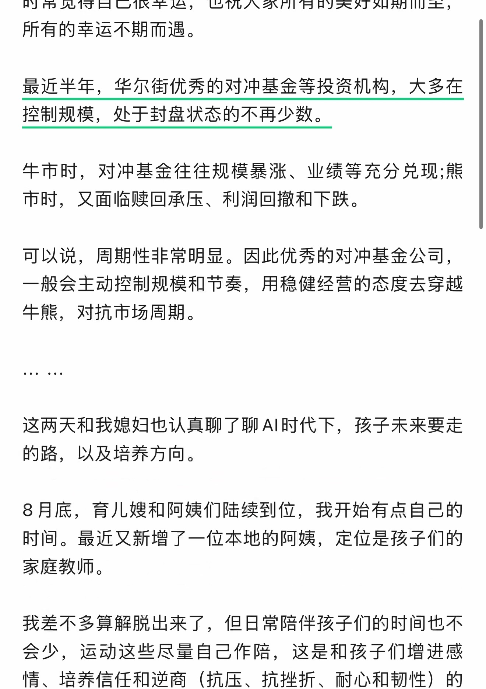
查看本页自动识别文字（OCR待核对） · 16 处低置信度提示
以下为未经逐字核对的自动识别结果，请以上方原图为准。
识别器标记 16 处低置信度，请对照截图核对
这些是识别器的风险提示，并不等于已确认的错误。
- 所有的幸运不期而遇。
- 牛市时， 对冲基金往往规模暴涨、 业绩等充分兑现 ;能
- 市时， 又面临赎回承压、 利润回撤和下跌。
- 一般会主动控制规模和节奏， 用稳健经营的态度去穿越
- 牛能， 对抗市场周期。
- 这两天和我媳妇也认真聊了聊 Al 时代下， 孩子未来要走
- 8 月底， 育儿媳和阿姨们陆续到位， 我开始有点自己的
- 会少， 运动这些尽量自己作陪， 这是和孩子们增进感
- 情、 培养信任和逆商 ( 抗压、 抗挫折、 耐心和韧性 ) 的
第 5 页 · 原始截图
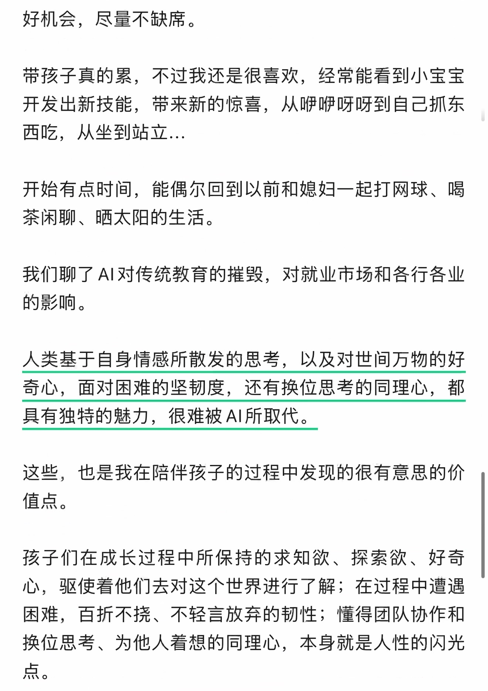
查看本页自动识别文字（OCR待核对） · 16 处低置信度提示
以下为未经逐字核对的自动识别结果，请以上方原图为准。
识别器标记 16 处低置信度，请对照截图核对
这些是识别器的风险提示，并不等于已确认的错误。
- 好机会， 尽量不缺席。
- 带孩子真的累， 不过我还是很喜欢， 经常能看到小宝宝
- 开发出新技能， 带来新的惊喜， 从啤嘱呀呀到自己抓东
- 西吃， 从坐到站立 …
- 开始有点时间， 能偶尔回到以前和媳妇一起打网球、 喝
- 我们聊了 AI 对传统教育的摧毁， 对就业市场和各行各业
- 孩子们在成长过程中所保持的求知欲、 探索欲、 好奇
- 困难， 自折不挠、 不轻言放弃的韧性 ; 懂得团队协作和
- 0
第 6 页 · 原始截图
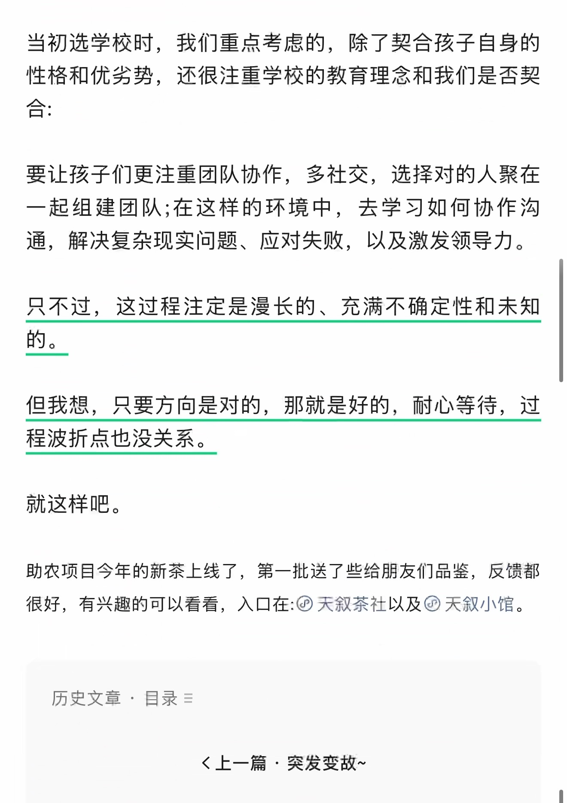
查看本页自动识别文字（OCR待核对） · 17 处低置信度提示
以下为未经逐字核对的自动识别结果，请以上方原图为准。
识别器标记 17 处低置信度，请对照截图核对
这些是识别器的风险提示，并不等于已确认的错误。
- 性格和优劣势， 还很注重学校的教育理念和我们是否契
- 要让孩子们更注重团队协作， 多社交， 选择对的人聚在
- 一起组建团队 ;在这样的环境中， 去学习如何协作沟
- 但我想， 只要方向是对的， 那就是好的， 耐心等待， 过
- 程波折点也没关系。
- 助农项目今年的新茶上线了， 第一批送了些给月友们品鉴， 反馈都
- 很好， 有兴趣的可以看看， 入口在 :人 @ 天叙茶社以及四天叙小馆。
- 历史文章， 目录 =
- 《上一篇突发变故 ~
第 7 页 · 原始截图
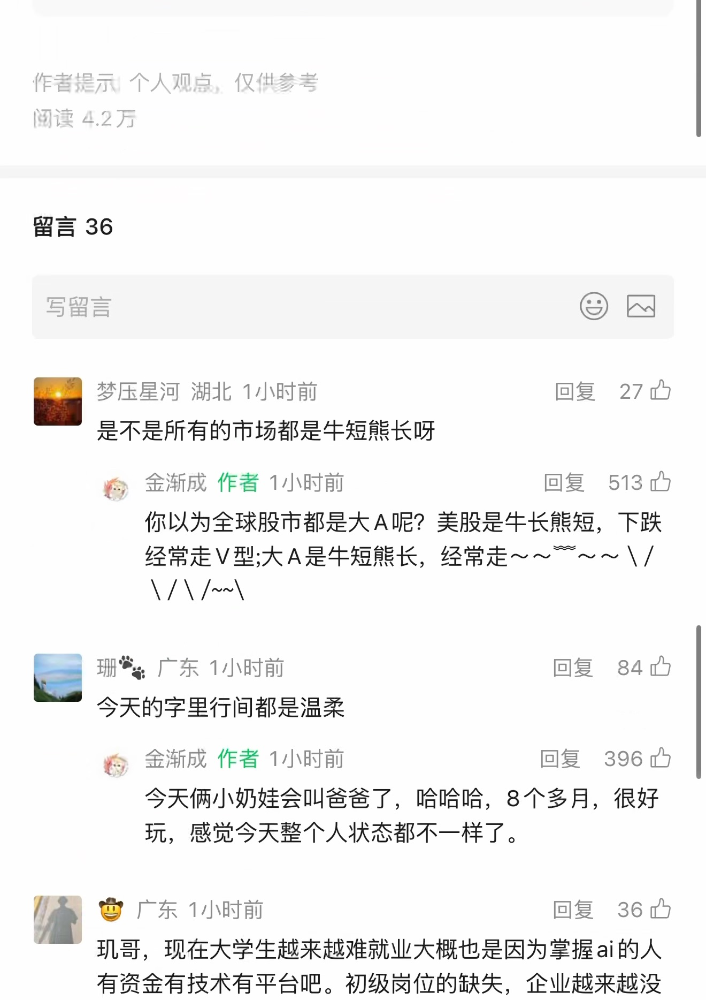
查看本页自动识别文字（OCR待核对） · 45 处低置信度提示
以下为未经逐字核对的自动识别结果，请以上方原图为准。
识别器标记 45 处低置信度，请对照截图核对
这些是识别器的风险提示，并不等于已确认的错误。
- 作者提示个人观点， 仅他参考
- 闻谊亏 2 万
- G @D
- 加梦压星河湖北 1 小时前回复 ”27 只
- 是不是所有的市场都是牛短能长呀
- 鸭， 金渐成作者 1 小时前回复 ”513 内
- 你以为全球股市都是大 A 呢 ? 美股是牛长能短， 下跌
- 经常走 V 型 ;大 A 是牛短能长， 经常走 ~~ 一 ~~ \/
- AAA
- 一再 3 广东 1 小时前回复 84 办
- 惟， 金渐成作者 1 小时前回复 ”396 办
- 今天俩小奶娃会叫爸爸了， 哈哈哈，8 个多月， 很好
- | 窗广东 1 小时前回复 ”36 办
- 现哥， 现在大学生越来越难就业大概也是因为掌握 ai 的人
第 8 页 · 原始截图
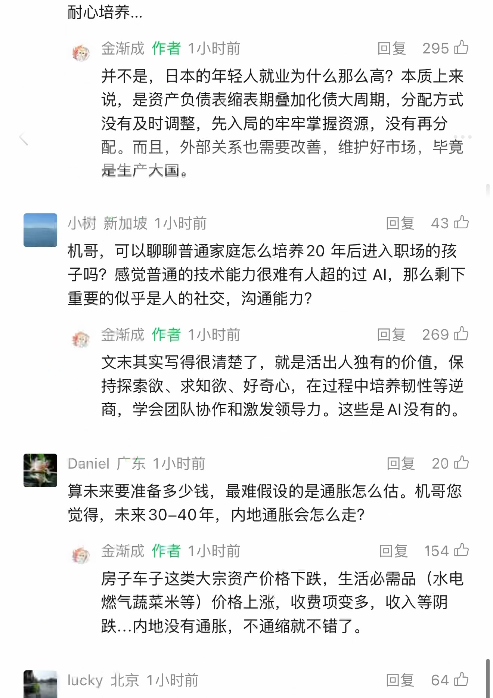
查看本页自动识别文字（OCR待核对） · 43 处低置信度提示
以下为未经逐字核对的自动识别结果，请以上方原图为准。
识别器标记 43 处低置信度，请对照截图核对
这些是识别器的风险提示，并不等于已确认的错误。
- 稚， 金渐成作者 1 小时前回复 295 办
- 说， 是资产负债表缩表期吉加化债大周期， 分配方式
- 配。 而且， 外部关系也需要改善， 维护好市场， 毕这
- 图小桂新加坡 1 小时前回复如已
- 子吗 ? 感觉普通的技术能力很难有人超的过 Al， 那么剩下
- 符人金渐成作者 1 小时前回复 269 办
- 持探索欲、 求知欲、 好奇心， 在过程中培养韧性等逆
- 商， 学会团队协作和激发领导力。 这些是 Al 没有的。
- (一 Daniel 广东 1 小时前回复 ”20 让
- 将人金渐成作者 1 小时前回复 ”154 四
- 燃气蔬菜米等 ) 价格上涨， 收费项变多， 收入等阴
- 跌 .… 内地没有通胀， 不通缩就不错了。
- 一 Iucky 北京 1 小时前回复 ”64 号
第 9 页 · 原始截图
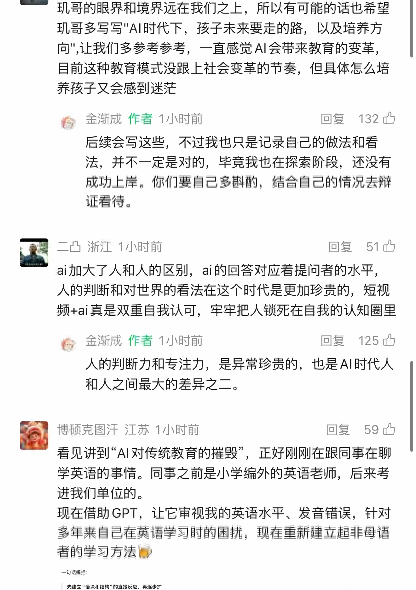
查看本页自动识别文字（OCR待核对） · 58 处低置信度提示
以下为未经逐字核对的自动识别结果，请以上方原图为准。
识别器标记 58 处低置信度，请对照截图核对
这些是识别器的风险提示，并不等于已确认的错误。
- 现哥的眼界和境界远在我们之上， 所以有可能的话也希望
- 现哥多与写 "Al 时代下， 孩子未来要走的路， 以及培养方
- 向 ", 让我们多参考参考， 一直感觉 AI 会党来教育的变革，
- 目前这种教育模式没跟上社会变革的节奏， 但具体怎么培
- 养孩子又会感到迷茫
- 稚 “ 金渐成作者 1 小时前回复 132 内
- 后续会写这些， 不过我也只是记录自己的做法和看
- 法， 并不一定是对的， 毕竟我也在探索阶段， 还没有
- 成功上岸。 你们要自己多谢酌， 结合自己的情况去辩
- 后二凸浙江 1 小时前回复 2
- 频 +ai 真是双重自我认可， 牢牢把人锁和死在自我的认知圈里
- 蕉， 金浙成作者 1 小时前回复 125 办
- | 一博项克图汗江苏 1 小时前回复 ”59 内
- 看见讲到 “Al 对传统教育的摧毁， 正好刚刚在跟同事在聊
- 现在借助 GPT， 让它审视我的英语水平、 发音错误， 针对
- 多年来自己在英语学习时的国势， 现在重新建立超非母语
- 者的学习方法去
- 先建立 “ 语块和结构 ”的直接反应， 再逐步扩
第 10 页 · 原始截图
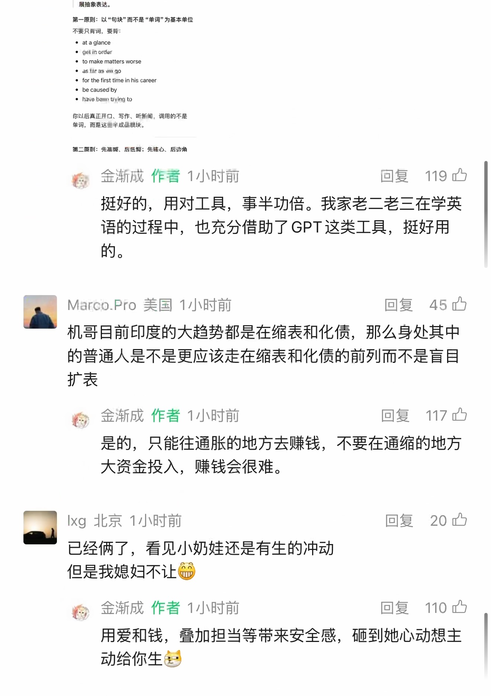
查看本页自动识别文字（OCR待核对） · 74 处低置信度提示
以下为未经逐字核对的自动识别结果，请以上方原图为准。
识别器标记 74 处低置信度，请对照截图核对
这些是识别器的风险提示，并不等于已确认的错误。
- 里抽象表达。
- 第一在则 : 以 “ 句块 ” 而不是 “单词 " 为基本单位
- 不槛只机河， 要条 :
- 。taglance
- 的 LE
- eto make matters worse
- 上色相由印
- eforthe first fme in his career
- Eu
- 地二 “ 习剖六隐卡妈队生泊 ,
- 谷， 金渐成作者 1 小时前回复 119 只
- 挺好的， 用对工具， 事半功倍。 我家老二老三在学英
- 语的过程中， 也充分借助了 GPT 这类工具， 挺好用
- 的口
- | Marco.Pro 美国 1 小时前回复如已
- 机哥目前印度的大趋势都是在缩表和化债， 那么身处其中
- 的普通人是不是更应该走在缩表和化债的前列而不是盲目
- 稚， 金渐成作者 1 小时前回复 117 由
- | Ixg 北京 1 小时前回复 ”20 办
- 已经俩了， 看见小奶娃还是有生的冲动
- 但是我媳妇不让贷
- 和， 金渐成作者 1 小时前回复 110 中
- 用爱和钱， 琶加担当等带来安全感， 磺到她心动想主
- 动给你生起
第 11 页 · 原始截图
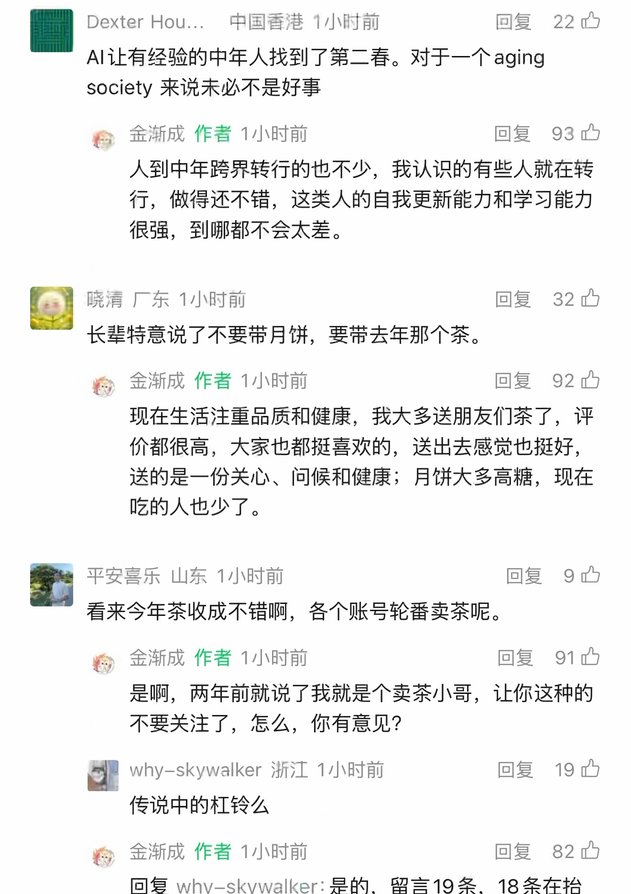
查看本页自动识别文字（OCR待核对） · 41 处低置信度提示
以下为未经逐字核对的自动识别结果，请以上方原图为准。
识别器标记 41 处低置信度，请对照截图核对
这些是识别器的风险提示，并不等于已确认的错误。
- 图 Dexter Hou... 中国香港 1 小时前回复 22 号
- 将金渐成作者 1 小时前回复 ”93 中
- 很强， 到哪都不会太差。
- 四晓清厂东 1 小时前回复 ”32 内
- 长， 金渐成作者 1 小时前回复 ”92 只
- 价都很高， 大家也都挺喜欢的， 送出去感觉也挺好，
- 送的是一份关心、 问候和健康 ;月饼大多高糖， 现在
- 一平安喜乐山东 1 小时前回复 9 四
- 看来今年茶收成不错啊， 各个账号轮番卖茶呢。
- 交金渐成作者 1 小时前回复 “91 办
- 是啊， 两年前就说了我就是个卖茶小哥， 让你这种的
- | why-skywalker 浙江 1 小时前回复 ”19 虱
- 恰， 金渐成作者 1 小时前回复 ”82 办
- 回复 why-skywalker: 是的， 留言 19 条，18 条在抬
第 12 页 · 原始截图
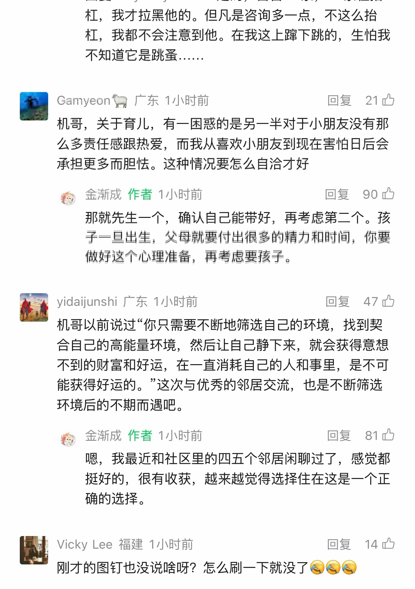
查看本页自动识别文字（OCR待核对） · 55 处低置信度提示
以下为未经逐字核对的自动识别结果，请以上方原图为准。
识别器标记 55 处低置信度，请对照截图核对
这些是识别器的风险提示，并不等于已确认的错误。
- 杠， 我才拉黑他的。 但凡是咨询多一点， 不这么抬
- 杠， 我都不会注意到他。 在我这上足下跳的， 生怕我
- 不知道它是跳蚤 .……
- 图 Gamyeon 喇广东 1 小时前回复已
- 机哥， 关于育儿， 有一困惑的是另一半对于小朋友没有那
- 么多责任感跟热爱， 而我从喜欢小朋友到现在害怕日后会
- 承担更多而胆性。 这种情况要怎么自洽才好
- 烙人金渐成作者 1 小时前回复 90 办
- 那就先生一个， 确认自己能带好， 再考虑第二个。 孩
- 子一且出生， 父母就要付出很多的精力和上时间， 你要
- 做好这个心理准备， 再考虑要孩子。
- 本本 yidaijunshi 广东 1 小时前回复 ”47 办
- 机哥以前说过 -你只需要不断地往选自己的环境， 找到契
- 能获得好运的。 ”这次与优秀的邻居交流， 也是不断筛选
- 环境后的不期而遇吧。
- 各人金渐成作者 1 小时前回复 81 办
- 嗯， 我最近和社区里的四五个邻居闲聊过了， 感觉都
- 挺好的， 很有收获， 越来越觉得选择住在这是一个正
- 量 Vicky Lee 福建 1 小时前回复 14 办
- 刚才的图钉也没说喻呀 ? 怎么刷一下就没了侠全全
第 13 页 · 原始截图
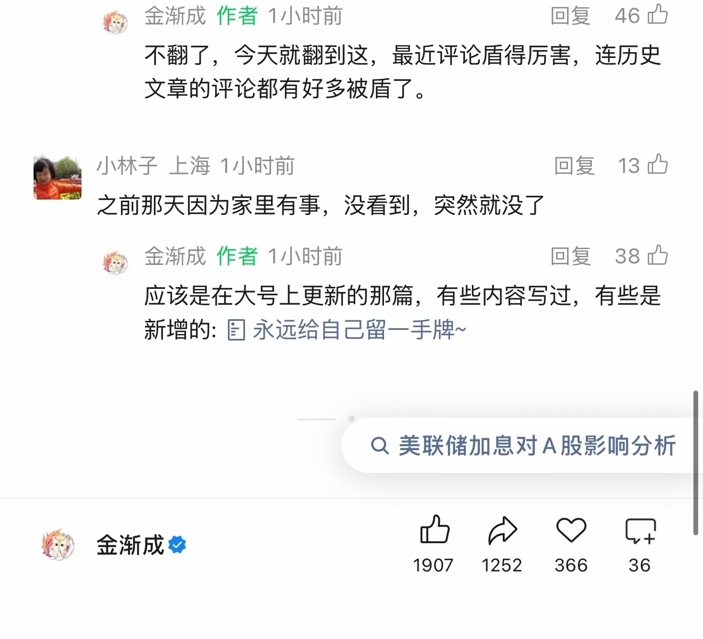
查看本页自动识别文字（OCR待核对） · 24 处低置信度提示
以下为未经逐字核对的自动识别结果，请以上方原图为准。
识别器标记 24 处低置信度，请对照截图核对
这些是识别器的风险提示，并不等于已确认的错误。
- 蕉人金渐成作者 1 小时前回复 ”46 办
- 靖入上回复 13 四
- 之前那天因为家里有事， 没看到， 突然就没了
- 蕉人金渐成作者 1 小时前回复 38 办
- 新增的 : 加永远给自己留一手牌 ~
- 每金渐成如四必 3 2
- 1907 1252 ”366 36
按日期浏览全部来源（同日按条目标识排序）
回到页首 ↑